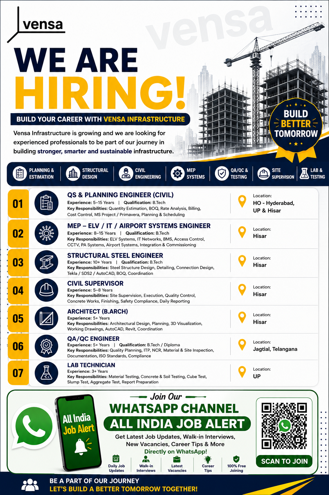

Vensa Infrastructure has announced new employment opportunities for experienced construction and engineering professionals. The company is looking for suitable candidates for multiple technical and site-based positions in Civil Engineering, Quantity Surveying and Planning, MEP and ELV systems, Airport Systems, Structural Steel Engineering, Civil Supervision, Architecture, QA/QC and Laboratory Testing.
These opportunities can be suitable for experienced candidates who have practical knowledge of construction projects, infrastructure development, civil execution, planning, billing, quality control, structural works and engineering coordination. The vacancies are available at different locations including Hyderabad, Hisar, Jagdal in Telangana and Uttar Pradesh, according to the recruitment information provided.
Company: Vensa Infrastructure
Industry: Infrastructure and Construction
Job Type: Engineering and Construction Site Opportunities
Experience: Approximately 3 to 15+ years depending on position
Qualification: B.Tech, Diploma and B.Arch depending on position
Locations: Hyderabad, Hisar, Telangana and Uttar Pradesh
Get the latest construction jobs, engineering vacancies, walk-in interviews, company recruitment updates and career opportunities directly on WhatsApp.
Join WhatsApp ChannelThe latest Vensa Infrastructure recruitment notification includes opportunities for professionals with experience in different areas of construction and infrastructure projects. Candidates who have previously worked on civil construction, project planning, quantity surveying, MEP systems, structural steel works, quality inspection, laboratory testing and site supervision may find suitable positions based on their qualifications and professional experience.
Infrastructure projects require coordination between several departments. Planning engineers, site engineers, quality engineers, supervisors and other technical professionals work together to ensure that projects are completed according to drawings, specifications, quality standards and project schedules. Therefore, candidates with practical site experience and technical knowledge can have an advantage depending on the requirements of the respective position.
The QS and Planning Engineer position is suitable for Civil Engineering professionals with experience in quantity estimation, planning and scheduling. The recruitment information indicates approximately 5 to 15 years of experience. Candidates should preferably have knowledge of quantity take-off, rate analysis, project planning, cost control and coordination activities.
Qualification: B.Tech
Locations: HO Hyderabad, Uttar Pradesh and Hisar
Candidates with experience in MEP, ELV, IT systems, airport systems, integration and commissioning may be suitable for this opportunity. Approximately 8 to 15 years of experience is mentioned for this role. Candidates with practical exposure to LV systems, network systems, BMS, access control and related project activities may have relevant experience.
Qualification: B.Tech
Location: Hisar
The Structural Steel Engineer role is suitable for experienced professionals with knowledge of steel structure design, detailing, connection design, fabrication coordination and site-related structural activities. Candidates with more than 10 years of relevant experience may be suitable according to the recruitment information.
Qualification: B.Tech
Location: Hisar
Civil Supervisors are responsible for monitoring day-to-day construction activities and coordinating with engineers, contractors and workers. Candidates should have practical experience in site supervision, execution, quality control, finishing works, safety compliance and daily progress reporting.
Experience: Approximately 5 to 8 years
Location: Hisar
The Architect position is suitable for candidates with architectural design and construction coordination experience. Knowledge of working drawings, architectural planning, design coordination, 3D visualization and site coordination can be useful for this position.
Experience: 5+ years
Qualification: B.Arch
Location: Hisar
The QA/QC Engineer position is intended for candidates with experience in quality planning, inspection, NCR management, material inspection, documentation, standards and compliance. Construction project experience and knowledge of quality control procedures can be valuable.
Experience: Approximately 5 years
Qualification: B.Tech / Diploma
Location: Jagdal, Telangana
The Lab Technician role is suitable for candidates with experience in construction material testing. Knowledge of concrete testing, soil testing, cube testing, slump testing, aggregate testing and reporting may be useful depending on project requirements.
Experience: 3+ years
Location: Uttar Pradesh
The experience requirement for these vacancies varies depending on the designation. Senior engineering and planning positions require extensive professional experience, while some positions such as Lab Technician and other site-based roles may require comparatively fewer years of experience. Applicants should carefully compare their actual experience with the position requirements before submitting their resumes.
Educational qualifications mentioned in the recruitment information include B.Tech, Diploma and B.Arch depending on the role. Candidates should ensure that their qualification and professional background are relevant to the position for which they are applying.
Join our WhatsApp Job Alert Channel for daily job vacancies, engineering jobs, construction jobs, walk-in interviews and company hiring notifications.
📲 Join WhatsApp Job AlertInfrastructure and construction projects involve multiple technical disciplines working at the same location. Civil engineers may coordinate with structural, electrical, mechanical and quality teams. Planning professionals monitor project schedules and progress, while QA/QC teams ensure that construction work meets applicable specifications and quality requirements.
Candidates with previous project experience should clearly mention their responsibilities in their resumes. For example, planning professionals can mention project scheduling and progress monitoring experience. Civil engineers can mention site execution and construction coordination. QA/QC candidates can mention inspection, documentation and quality systems. Lab professionals can mention concrete, soil and aggregate testing.
Before applying, candidates should update their CV with complete and accurate professional information. Your resume should clearly include your current designation, total experience, educational qualification, previous company details and important project experience.
Candidates should also mention their technical skills relevant to the position. For example, planning engineers can include estimation and scheduling skills, while structural engineers can mention steel structure and fabrication experience. QA/QC professionals should include inspection and quality documentation experience where applicable.
Interested and eligible candidates may send their updated resumes to the following recruitment email address:
Email:
recruitment@vensainfra.com
Candidates should mention their preferred job position in the email subject line. Make sure that your CV contains correct information regarding your qualification, total experience, current location and previous project experience.
Candidates are advised to submit a professional and updated resume. Avoid sending incomplete information. If you have worked on important infrastructure or construction projects, clearly mention the project name, your designation, your responsibilities and the duration of your work.
Applicants should also keep educational certificates, experience certificates, identity documents and relevant technical certificates ready. Depending on the company's recruitment process, shortlisted candidates may be contacted for technical discussions, HR interviews or further verification.
Job seekers should independently verify the job role, location, salary, employment terms and selection process with the recruiting organization before accepting any employment offer. Do not pay money to anyone for job selection, registration or an offer letter unless the request has been officially verified.
Get regular updates about Civil Engineering, Mechanical Engineering, Electrical, MEP, Safety, QA/QC, Construction and Infrastructure jobs.
JOIN OUR WHATSAPP CHANNELVensa Infrastructure's latest recruitment opportunities may be suitable for experienced professionals from Civil Engineering, MEP, Structural Steel, Architecture, Quality Control and Laboratory Testing backgrounds. Candidates whose qualifications and professional experience match the available positions can prepare their updated resumes and apply through the recruitment email address mentioned above.
Before applying, carefully review your experience and select the position that best matches your professional background. Providing a clear and professional resume can help recruiters understand your technical experience and project exposure.
Keep checking our WhatsApp Job Alert Channel for more company recruitment updates, walk-in interviews and new engineering and construction job opportunities across India.